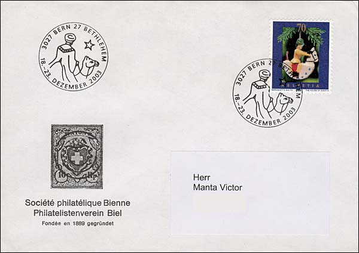
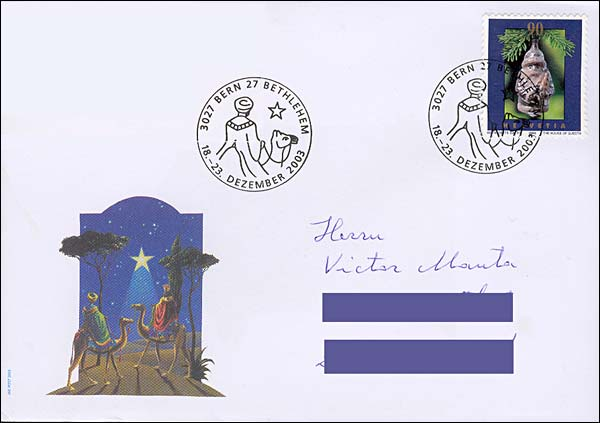
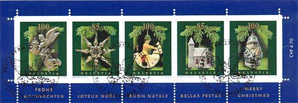
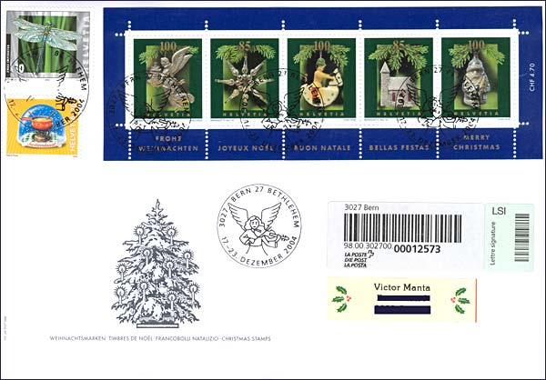

In spring 2000, Swiss Post asked the successful stamp designer Bernadette Baltis if she would like to tackle a series of Christmas stamps and card that should be issued over a longer period of time. She gladly accepted this exceptional offer and she has produces in her atelier a succession of stamps and card that marked the Swiss philately of the last 5 years. Ms. Baltis found some very nice decorations at Mr. Anton P. Zobrist’s in Ebmatingen, in the biggest collection of old Christmas decorations in Europe. Through talking with him and seeking little gems, they found together some beautiful collectors’ pieces, light, delicate miniature works of art of yesteryear, with differing features and of differing origins and design.
We feature above a portrait of the designer and a Christmas greeting card (the front page and its inner face) issued in 2002. These cards, that were different in each year, were offered by the Swiss Post to its faithful customers. Unfortunately, the first day cancels, even if nice, had the same design year after year, and for this reason are presented only one time.
Fortunately, the cancels applied at the end of the year at the post office Bern Bethlehem are much more varied and interesting, and for this reasons we display the Christmas stamps designed by Ms. Baltis that were cancelled by these ones. Please see above a letter cancelled in December 2001.  In the year 2003 the Swiss Postal administration issued two Christmas stamps. The 70c value was designated to the second rate letters, that were delivered in 3 working days.  The 90c Christmas stamp was for the first rate letters (delivery on the second working day).  The postage rate changed in 2004, so the Swiss Post has used this occasion to issue a final miniature sheet of five Christmas stamps.  The above registered letter was cancelled at the post office Bern Bethlehem. Just to mention that the insect stamp, issued in 2002, was also designed by Ms. Bernadette Baltis. Source: Focus on stamps, Issue 4/2004. Links:
|